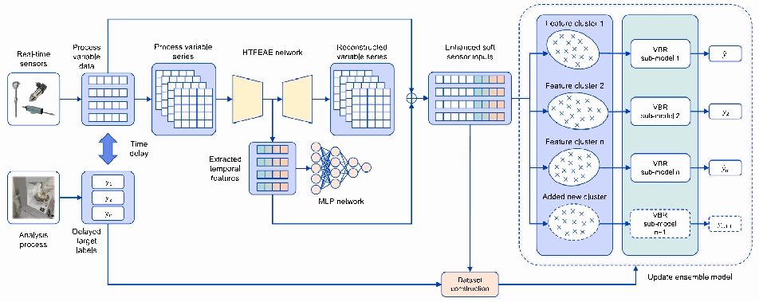
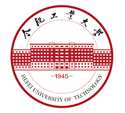

Enhancing online industrial quality index prediction with a general deep temporal feature extraction and incremental ensemble modeling framework
Engineering Applications of Artificial Intelligence, 156, 111104
* Equal contribution
Hello! I am Rui Yang, an undergraduate student in Vehicle Engineering at Hefei University of Technology (HFUT), expecting to graduate in 2027. I am currently an Embodied AI Research Intern at Hefei Si Valley Technology Development and conduct humanoid robotics research at HFUT’s Lab for Multimedia Computing, advised by Prof. Liu Liu.
My research interests lie in humanoid robotics, learning-based control, and embodied intelligence, with a particular focus on whole-body control, teleoperation, and imitation learning. Building on my experience in mechanical design, physical robot systems, and learning algorithms, I am interested in full-stack robotics development, integrating hardware, perception, planning, control, and learning to enable reliable robot behavior.
My long-term goal is to develop humanoid robots that can adapt learned skills to new environments and coordinate locomotion and manipulation to accomplish complex, multi-stage tasks autonomously. I enjoy connecting hands-on engineering with learning and control, and I welcome opportunities to discuss research and potential collaborations.

B.S. in Vehicle Engineering

Engineering Applications of Artificial Intelligence, 156, 111104
* Equal contribution